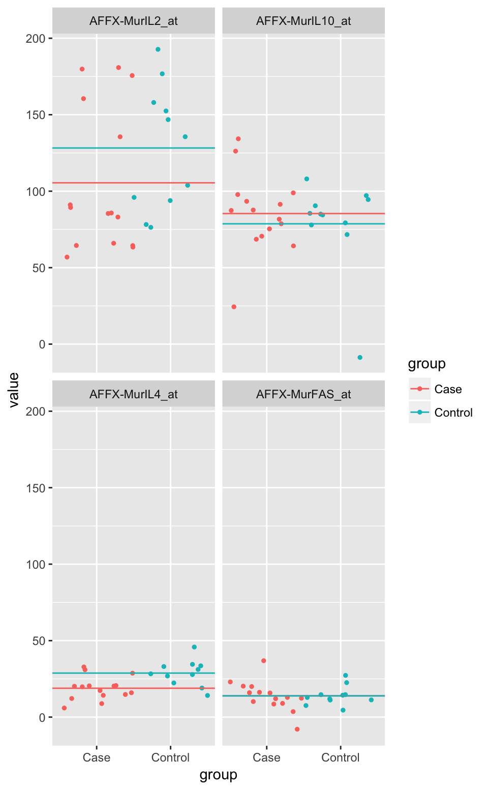
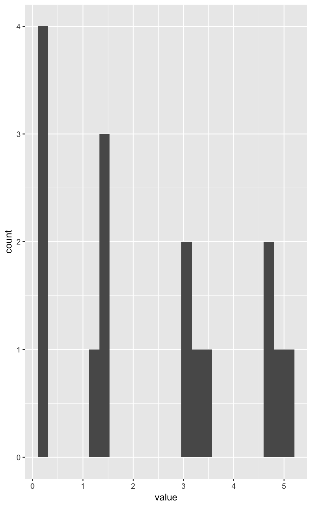
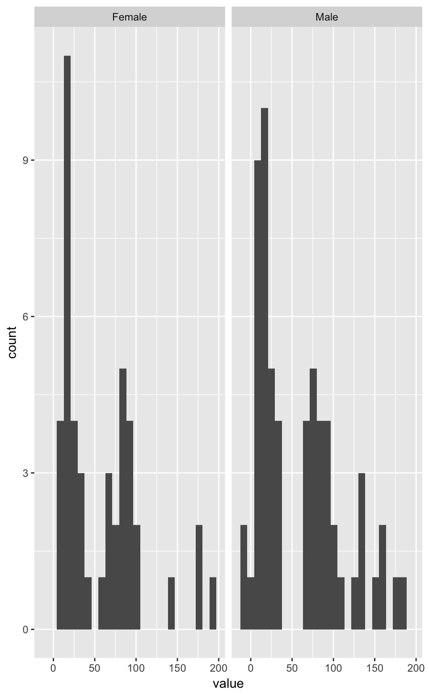
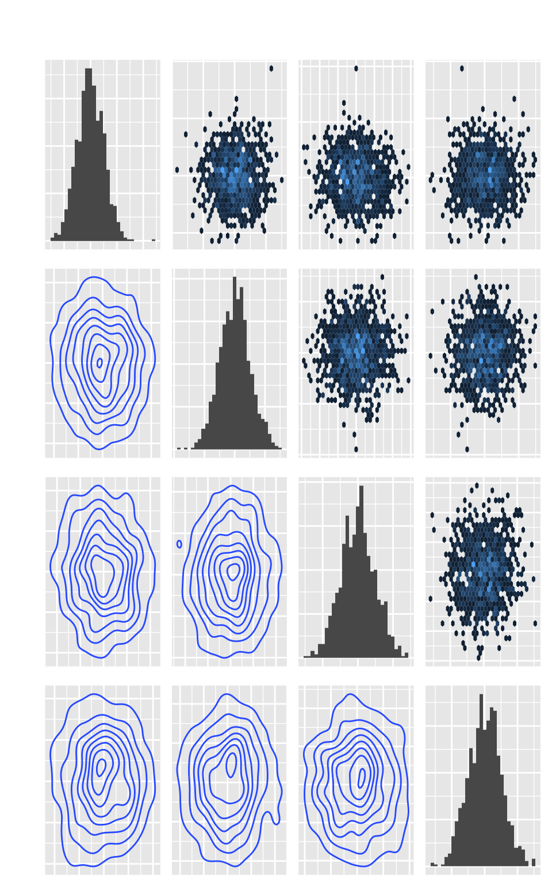
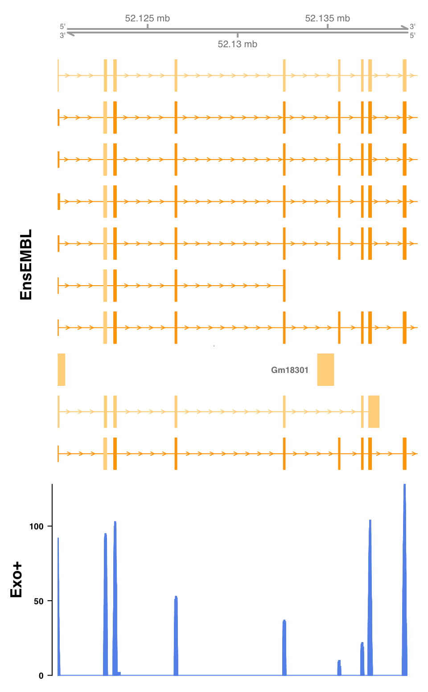

Plotting functions
Diego Diez
2017-02-07
Introduction
Required packages for building this vignette:
knitr::opts_chunk$set(fig.width=5, fig.height=5)
library(q3tools)
library(Biobase)
library(IRanges)
library(GenomicRanges)Dots plot
You can use matrices.
tmp1 <- data.matrix(iris[1:4, -5])
plotPoints(tmp1, group = rep(LETTERS[1:2], each = 2))You can use other objects like ExpressionSet.
data(sample.ExpressionSet)
tmp2 <- sample.ExpressionSet[1:4, ]
plotPoints(tmp2, group = tmp2$sex)
plotPoints(tmp2, group = tmp2$type)
Histograms
A histogram.
plotHistogram(tmp1)
plotHistogram(tmp1, group = rep(LETTERS[1:2], each = 2))
An example using ExpressionSet object.
plotHistogram(tmp2)
plotHistogram(tmp2, group = tmp2$sex)
plotHistogram(tmp2, group = tmp2$type)
Pairs
A paired scatterplot.
plotPairs(mtcars[,1:4])## `stat_bin()` using `bins = 30`. Pick better value with `binwidth`.
## `stat_bin()` using `bins = 30`. Pick better value with `binwidth`.
## `stat_bin()` using `bins = 30`. Pick better value with `binwidth`.
## `stat_bin()` using `bins = 30`. Pick better value with `binwidth`.
plotPairs(mtcars[,1:4], geom.low = "point", geom.mid = "density", geom.up = "density2d")
tmp <- matrix(rnorm(1000 * 4), ncol = 4)
plotPairs(tmp, geom.low = "hex", geom.up = "density2d")## `stat_bin()` using `bins = 30`. Pick better value with `binwidth`.
## `stat_bin()` using `bins = 30`. Pick better value with `binwidth`.
## `stat_bin()` using `bins = 30`. Pick better value with `binwidth`.
## `stat_bin()` using `bins = 30`. Pick better value with `binwidth`.
Heatmaps
A heatmap.
tmp2 <- sample.ExpressionSet[1:25, ]
plotHeatmap(tmp2)
plotHeatmap(tmp2, col.cluster = TRUE, scale = TRUE)A correlation heatmap.
plotCorrelation(exprs(sample.ExpressionSet), cluster = TRUE)Venn diagrams
A venn diagram.
plotVenn(
iris[, -5] > 2,
fill = c("cornflowerblue", "orange", "darkorchid1", "yellowgreen"),
alpha = .3,
col = NA
)

Gene tracks
A gene track.
# plot some gene.
plotGene("Stat1", "mm10")
# add some data.
f <- system.file("files/example.bam", package = "q3tools")
plotGene("Stat1", "mm10", add.data = list("Exo+" = f))
# zoom in.
plotGene("Stat1", "mm10", add.data = list("Exo+" = f), from = 52.12e6, to = 52.14e6)The above code may fail if the genome version at Biomart differs from the version expected by Gviz, the underlaying package used by plotGene. In that case, the biomart object mast be specified directly. In that case, the argument genome is ignored.
library(biomaRt)
mart <- useMart(biomart = "ensembl", dataset = "mmusculus_gene_ensembl")
f <- system.file("files/example.bam", package = "q3tools")
plotGene("Stat1", biomart = mart, add.data = list("Exo+" = f), from = 52.12e6, to = 52.14e6)
Ranges
A set of ranges.
tmp <- IRanges(start = c(1, 7, 10, 5, 13), end = c(4, 12, 15, 8, 14))
tmp## IRanges object with 5 ranges and 0 metadata columns:
## start end width
## <integer> <integer> <integer>
## [1] 1 4 4
## [2] 7 12 6
## [3] 10 15 6
## [4] 5 8 4
## [5] 13 14 2plotRanges(tmp, sep = .3)
If we have GRanges we have to specified the seqname.
# create GRanges from IRanges.
tmp <- GRanges(seqnames = c(1,1,2,2,2), ranges = tmp)
plotRanges(tmp, seqnames = "1")
plotRanges(tmp, seqnames = "2")# override seqnames.
plotRanges(ranges(tmp))